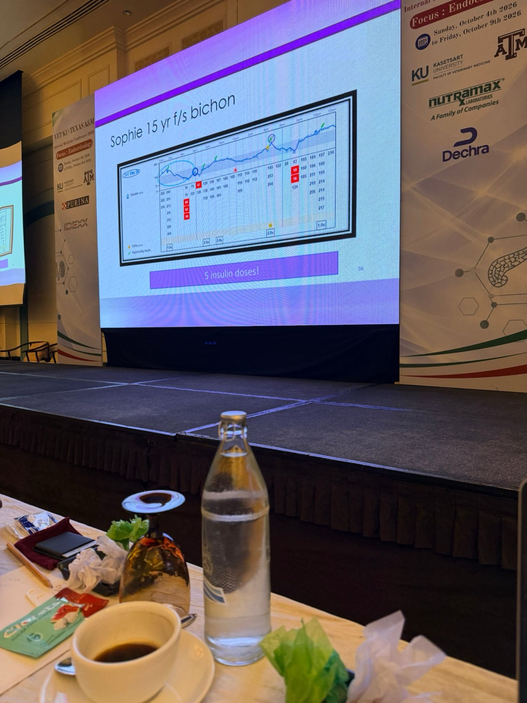

犬糖尿病的照護光譜選項（Establishing Spectrum of Care Options in Canine Diabetes Mellitus）
主講：Jocelyn Mott, DVM, DACVIM (SAIM), FACVIM（犬貓糖尿病）
2026 年 10 月 6 日｜VET-KU × Texas A&M 內科研討會｜場次 07
⭐ 必記原則
- 犬糖尿病的死因多半是飼主放棄，不是治不好
- 確診時 10–40% 被安樂死，37–60% 活不到 1 年
- 飼主選比較基本的方案，不代表做得比較差
- 治療障礙不只是錢：作息、怕低血糖、手部或視力障礙
- 治療目標是生活品質與臨床症狀，不是血糖數字
- 講者首選基礎型胰島素，稍微偏好 Degludec
- 最重要的監測工具：臨床症狀與體重（ALIVE DCS）
- 付不起任何監測：每月 email DCS 與體重也能調劑量，不必安樂死
- CGM 不是終身配戴：1–2 片找劑量，之後每 3–4 個月一片
- 狗的感測器平均只撐 5–10 天；很瘦的動物不要貼胸側
- 平價市售飼料可以取代糖尿病處方飼料
- 前 6 個月、第 1 個月的密集支持能降低安樂死
核心訊息與錄音總覽
▾核心訊息
- 本場的 SOC 指 Spectrum of Care（照護光譜），不是 Standard of Care。
- 🎤 糖尿病是可以治療的疾病，安樂死率卻非常高。為什麼？講者整場的答案是：飼主的負擔，而且不只是錢。
- 🎤 費用拆成四塊：胰島素、獸醫診療、飲食、監測，每一塊都提供從便宜到完整的選項，最後用「Mix and Match」組合成個別化方案。
🎤 錄音總覽
錄音從「存活與安樂死」那張投影片開始，一直到最後的 Abby 病例與延伸閱讀，幾乎完整涵蓋整場。很多內容與前一天（10 月 5 日）的場次重疊，講者多次說「我們昨天講過」，這些部分只簡短帶過：
- 飼主的治療障礙與照護光譜的定義、涉及的三方（病患、飼主、獸醫）
- 現場舉手調查：在各位的國家，哪一項最貴？
- 胰島素：美國市場變化、懸浮型 vs 基礎型、價格表、講者偏好
- 監測：DCS（付不起時的做法）、血糖曲線、果糖胺與 HbA1c、CGM（原理、Libre 2 vs 3、延遲、研究、何時使用、健康動物的低值、氣胸）
- 飼主對數據的反應：病例 Sophie（狗）、Fluffy（貓）
- 飲食、獸醫支持與降低成本、Abby 的方案組合
逐字稿來源：課堂錄音「完整記錄」PDF。專有名詞的轉錄錯誤已在文中以【更正】標出，並整理在最後一節的更正表。
1. 為什麼照護光譜對犬糖尿病很重要
▾🎤 存活與安樂死
| 時間點 | 比例 |
|---|---|
| 確診當下被安樂死 | 10–40% |
| 確診後 30 天內 | 15–20% |
| 活不到 1 年 | 37–60% |
🎤 「所以這是一個可以治療、但安樂死率非常高的疾病。為什麼？」
出處：Tardo 等（JVIM，新診斷糖尿病犬的存活與預後因子，獸醫教學醫院）、Fall 等（瑞典族群資料的發生率、存活與品種分布）。
🎤 Big Pet Diabetes Survey（超過 1000 位獸醫）
- 🎤 前一天講過的這篇也包含狗。調查對象是超過 1000 位獸醫，問的是他們客戶中選擇不治療、在確診時就安樂死的那群人。
- 結果：每 10 隻糖尿病寵物有 1 隻在確診時被安樂死，第一年內再多 1 隻。🎤 「到第一年結束時，我們失去了很多病患。」
| 確診時安樂死的原因 | 治療第一年內安樂死的原因 |
|---|---|
| 費用、年齡、併發疾病、寵物福祉、對飼主生活的影響 | 治療沒反應或飼主配合度差、照顧者疲乏、好幾年都要維持固定作息、治療與監測的金錢和時間負擔 |
🎤 糖尿病犬生活品質工具（Niessen 等，JVIM 2012）
🎤 前一天講過貓的版本，這篇是狗的版本。研究原本要評估糖尿病犬的生活品質，過程中也評估了飼主的生活。飼主最在意的前 10 項：
- 整體擔憂
- 少了陪親友的時間
- 擔心狗的視力
- 無法把狗送去寄宿
- 擔心低血糖
- 融入社交生活
- 費用
- 擔心能不能長期照顧下去
- 配合工作生活
- 活動受限
- 🎤 「擔心能不能長期照顧下去」：我們常常告訴飼主，這輩子每天每 12 小時都要在家餵食加打針，對很多人來說根本做不到。
- 🎤 10 項裡只有 2 項跟狗的福祉有關：擔心狗的視力、擔心低血糖。其他都是對飼主生活的影響。想讓飼主願意治療，一定要把這點考慮進去。
🎤 糖尿病犬飼主的治療「障礙」
| 障礙 | 🎤 講者說明 |
|---|---|
| 生活型態調整 | 照顧糖尿病狗要怎麼塞進他們的生活？ |
| 費用 | 永遠都可能是考量。 |
| 怕低血糖 | 很多飼主非常怕。例如前一天的 Snowball（後來發現腎上腺腫瘤和肺腫瘤、在用 SGLT2 抑制劑的那隻狗），飼主對低血糖怕得要命。 |
| 作息 | 很多飼主在工作、照顧小孩，同時還在照顧年邁的父母，我們又要求他們在這之上很規律地照顧狗。 |
| 家人朋友不支持 | 飼主想治療，但親友說「你幹嘛花那麼多錢？太荒謬了，安樂死就好。」親友不支持，就一定要從我們這裡得到支持。 |
| 打針 | 很多飼主從來沒拿過針筒，有針頭恐懼。 |
| 生活品質 | 這會影響他們的生活品質，影響多大？ |
| 監測方式 | 有時我們要求飼主在家幫狗採血驗血糖。如果飼主怕針或怕血就做不到。我們設下他們注定會失敗的標準，他們會覺得辜負了狗、也辜負了我們。 |
| 不切實際的期待 | 很多人對糖尿病的印象來自人。人的糖尿病管理、治療都密集得多，併發症也嚴重得多；獸醫如果再要求飼主達到某種「黃金標準」，完全不切實際。一定要和飼主設定實際的目標。 |
| 寵物福祉 | 這會怎麼影響牠？治療牠公平嗎？ |
出處：Niessen 等 JVIM 2010、2012；Hazuchova 等 JFMS 2018。
2. 照護光譜：定義、涉及誰、治療目標
▾🎤 定義（Fingland 等，JAVMA 2021）
一段連續、都可接受的獸醫照護範圍：以實證醫學為基礎，同時回應飼主的期待與經濟限制。
- 🎤 照護光譜要提供一個範圍的選項：一端是比較基本、低成本的選項，另一端是比較進階、高成本、需要更多技術的選項。
- 🎤 一定要跟飼主強調：選比較基本的那一端，不代表不能接受，也不代表比選進階方案的人差。他們選的就是適合他們和寵物的方案，不是做得比應該的少。
🎤 照護光譜不只是費用
- 飼主的作息。
- 飼主的目標：如果飼主唯一在意的是「狗晚上能一覺到天亮」，這很容易做到，不需要一堆昂貴的管理。
- 飼主的能力：能不能幫寵物採血？
- 想要的生活品質，以及治療對生活品質的影響。
- 風險承受度。
這些都要和飼主討論，因為會影響他們要不要治療、選哪種治療。
- 作息：看不出要怎麼塞進日常生活。
- 非常擔心低血糖：不是不想用胰島素或不想治療。
- 身體障礙：例如雙手嚴重關節炎，卻要他們用空針從藥瓶抽胰島素，根本做不到；或者有視力障礙。
🎤 照護光譜涉及誰？
| 對象 | 要考慮的事 |
|---|---|
| 1. 病患 | 講者放了自家狗到醫院時的照片：非常緊張。「如果你告訴我牠每兩週要回診一次，我會選擇不治療，因為牠的生活品質會被嚴重影響。」要看病患的個性、共病，以及治療會怎麼影響這些。 |
| 2. 飼主 | 多怕風險？有飼主直說「如果這隻狗低血糖，我就安樂死」，這種低風險承受度會影響怎麼管理和監測，好讓他們安心。 能負擔多少時間和金錢？ 治療目標是什麼？只希望狗晚上不要叫醒他們上廁所，和希望不要白內障、要很嚴格控制血糖，是完全不同的情況（白內障不一定防得了，但可以試）。 能承受的風險與併發症：如果狗得了 DKA，是不是就會安樂死？對飼主生活品質的影響是什麼？ |
| 3. 你（主治獸醫） | 你需要什麼才能有效管理這隻狗，同時適合這個飼主和這隻狗？ |
🎤 確診糖尿病時，一定要和飼主坐下來深入討論以上所有事：處理治療障礙、找出他們的目標，訂出專屬於這位飼主和這隻狗的計畫。
🎤 讓飼主願意投入治療
良好溝通 ＋ 充分衛教 ＋ 穩固的獸醫支持 ＝ 飼主配合度、遵從度和信心都很好。
- 🎤 狗可能配合也可能不配合，但飼主願意投入治療，是剛確診時第一個要達成的目標。
- 🎤 充分衛教讓他們有信心；獸醫支持是指他們有問題時有管道得到解答，而且有人會主動關心進展如何。
🎤 實際可行的治療目標
- 改善飼主與寵物的生活品質（🎤 永遠是第一）
- 盡量改善臨床症狀
- 預防重大併發症：DKA 和低血糖
- 讓體態評分（BCS）恢復正常（🎤 Bugbee 醫師講過，見 06）
3. 費用與胰島素選擇
▾🎤 四大費用與現場調查
- 🎤 費用和可近性在世界各地差很多，講者講的是美國的情況。四大支出：胰島素、獸醫診療、飲食、監測。
- 🎤 講者請現場舉手：在你執業的地方，哪一項是管理糖尿病狗最貴的？胰島素、飼料、監測、獸醫診療依序舉手（錄音沒有記下各項人數，飼料有「一些人」）。
- 🎤 美國：獸醫診療大概是最貴的。胰島素價格在進步，但仍有很多胰島素貴到不能用在寵物身上。監測費用看用哪種系統。
🎤 沒有最好的胰島素：要了解你手上的選項
- 前一天講了很多胰島素，這裡不多談，但沒有一種胰島素適合所有糖尿病狗，要看個別的狗和個別的飼主。要建立照護光譜，就一定要了解有哪些胰島素，而且這一直在變。
- 美國的例子：regular insulin 預計在 2026 年底完全退出市場，Humulin NPH 也是。這對 DKA 治療是重大改變，因為我們一直都用 regular insulin。
- 會留在市場上的胰島素，通常是對人有好處的；獸醫用量對藥廠來說微不足道。
- 很多胰島素的藥瓶會完全消失：從 1980 年代起，人大多用筆型，已經不需要藥瓶。
🎤 選胰島素時要問的問題：
| 問題 | 對應選擇 |
|---|---|
| 費用 | 見第 5 節價格表 |
| 治療策略 | 基礎（basal）、追加（bolus），或兩者；中效或長效；懸浮液或溶液 |
| 飼主能配合的時間表 | 能每 8 小時打 → NPH 也許可以；只能每 24 小時 → 大概要選基礎型 |
| 針頭恐懼 | 筆型比較不嚇人 |
| 手部靈活度問題 | 筆型比較好操作 |
| 早上挑食、不吃早餐的狗 | 選不必綁吃飯的胰島素 |
🎤 確診時我們一次丟給飼主一大堆決定，一定要花時間把所有選項講清楚。
🎤 FDA 核准的犬用胰島素
Vetsulin®／Caninsulin®（豬 lente，40 U/mL）、ProZinc®（PZI，重組人類胰島素，40 U/mL），都要搭配 U-40 針筒。
🎤 懸浮型（Lente、NPH、PZI）vs 基礎型
| 懸浮型（中效） | 基礎型 |
|---|---|
|
要回溶（Vetsulin 要搖） 皮下溶解不規則 → 吸收難預測、劑量不準 每天變異大 每 8–12 小時一次（NPH q8–12h） 通常要和吃飯一起或接近吃飯時打；高峰約在注射後 3–6 小時，和進食時間對不上 多半用空針加藥瓶 |
不用回溶；吸收穩定；每天變異小（🎤 Libre 數據比較一致） 作用曲線較平 人醫低血糖風險較低（🎤 Toujeo 和 Degludec 的研究低血糖都很少，但沒有研究直接比較基礎型和 Vetsulin，所以不確定） 不必緊綁吃飯；有些狗一天一次就夠 用筆型，比空針精準 人可以任何時間打；狗可能可前後 ±2–3 小時（講義打問號） |
4. 基礎型胰島素的研究
▾| Glargine U300（Gilor 等，2024） | Degludec（Tresiba®） | |
|---|---|---|
| 病例數 | 95 隻 | 33 隻（6 隻新診斷、27 隻已在治療），用 FreeStyle Libre 監測 |
| 一天一次就夠 | 約 60% | 85%（28 隻）；5 隻需 q12h 或加一劑 NPH |
| 達到控制 | 約 2 週 | 中位數 14 天（3–32 天） |
| 最終劑量 | — | 中位數 1.3 U/kg（0.4–2.2） |
| 低血糖 | — | 只有 1 次臨床低血糖 |
| 控制品質 | 多數控制良好 | 76% 極佳或很好 |
- Degludec 起始劑量：0.5 U/kg，每日一次。【更正】講義寫「0.5 mg/kg」，胰島素應為 U/kg。
- 🎤 錄音中這兩頁沒有另外講解（前一天的場次已詳細介紹，見 02 第 10、11 節）。
- 💡 最終劑量中位數 1.3 U/kg，比 lente／NPH 的常用劑量高，調整時不要因為數字偏高就不敢往上加。
5. 胰島素費用比較與講者偏好
▾🎤 胰島素很貴
- 全球胰島素價格：🎤 圖上沒有泰國，講者也找不到泰國的資料。製造一瓶胰島素的成本約 $2–4，很多國家付 $3 到 $10、$15、$20，同一瓶在美國要 $99。
- 🎤 美國的問題是人的胰島素配給（rationing）：糖尿病患者買不起處方量，就省著用、有些天少打一點，這也是醫療費用高的原因之一：沒照處方打胰島素，就容易發生 DKA 等問題。
- 🎤 世界很多地方大概沒那麼嚴重，但在美國是大問題，也確實影響我們為寵物買胰島素的成本。
📷 現場🎤 Insulin Cost Comparison（2025 年 3 月，美國佛州）
🎤 每一州都不一樣，這是 2025 年 3 月的資料，講者說需要更新一下。
| 胰島素 | 濃度 | 瓶裝 | 瓶裝每單位 | 筆型 | 筆型每單位 |
|---|---|---|---|---|---|
| Vetsulin（豬 lente） | 40 U/mL | $75.00／10 mL | $0.19 | $255.99／10×2.7 mL | $0.24 |
| Novolin-N | 100 U/mL | $57.53／10 mL | $0.06 | $90.60／5×3 mL | $0.06 |
| ReliOn NPH 與 70/30 | 100 U/mL | $24.88／10 mL | $0.02 | $42.88／5×3 mL | $0.03 |
| Toujeo（Glargine U300） | 300 U/mL | 無 | — | $367.08／3×1.5 mL | $0.27 → 學名藥 $0.10 |
| Degludec | 100 U/mL | $133.00／10 mL | $0.13 | $71.99／5×3 mL | $0.05 |
| ProZinc | 40 U/mL | $229.99／20 mL | $0.29 | 無 | — |
| Lantus（Glargine） | 100 U/mL | $139.99／10 mL | $0.14 | $64.99／1×3 mL | $0.22 |
| Semglee（Glargine） | 100 U/mL | $295.11／10 mL | $0.30 | $106.40／1×3 mL | $0.35 |
| Basaglar（Glargine） | 100 U/mL | 無 | — | $94.34／1×3 mL | $0.31 |
- 🎤 獸醫核准的胰島素：Vetsulin 每單位 19 分錢、ProZinc 29 分錢。
- 🎤 對照 Walmart 的自有品牌 ReliOn（NPH 或 70/30），是美國最便宜的胰島素：瓶裝每單位 2 分錢、筆型約 3 分錢，和獸醫核准的差很多。Degludec 約 5 分錢，跟 ReliOn 差不多。
- 🎤 Toujeo 原本每單位 27 分錢，大型犬幾乎不可能用；學名藥幾個月前剛上市，現在降到每單位 10 分錢。這就是為什麼價格變化很快。
- 🎤 Degludec 也是例子：2023 年以前完全貴到不能用，一支筆大概 $400–700，後來才改變。
- 🎤 價格一直在變，要持續追蹤，才能給飼主最好的選項。
📷 現場版本只有 Vetsulin $0.19 有藍框；PDF 裡 ReliOn 的紅圈、Degludec 的綠圈、ProZinc 的藍框可能是講解時才出現的動畫標註。

📷 現場🎤 My Preference for Insulin

"I'm a little partial to Degludec over Toujeo, but either one of those is completely appropriate."🎤 我治療糖尿病狗的首選是基礎型胰島素。我稍微偏好 Degludec 勝過 Toujeo，但兩者都完全適合。
| 比較 | Degludec（Tresiba） | Glargine U300（Toujeo） |
|---|---|---|
| 🎤 筆型每單位 | $0.05 | $0.27；學名藥 $0.10 |
| 一天一次就夠的比例 | 85% | 約 60% |
| 💡 小型犬抓劑量 | 有 U-100，容易微調 | U300 濃縮，低劑量難抓 |
🎤 基礎型胰島素處理了哪些治療障礙？
| 障礙 | 基礎型胰島素怎麼幫忙 |
|---|---|
| 作息 | 原本一天兩次改成一天一次，對飼主差很多，時間彈性大很多。 |
| 食物 | 挑食、不照時間吃的狗，不用再綁吃飯，飼主上班不會因此遲到。 |
| 費用 | 在美國，基礎型胰島素已經變得很划算。 |
| 手部靈活度、視力 | 用筆型，比較好操作。 |
| 針頭恐懼 | 筆型好像沒那麼嚇人，很多不想用空針的人可以接受筆。 |
| （未來） | 已經有每週一次的基礎胰島素；如果狗一週只要打一到兩次，那更好（見 02 第 19 節）。 |
- 💡 Degludec 在皮下形成多聚六聚體儲積、慢慢釋放；人醫半衰期約 25 小時，作用曲線平、給藥時間彈性大。機轉與 U-100／U-200 換算見 02 第 11 節。
- 💡 預算最緊時，ReliOn NPH 仍是最便宜的選項（第 12 節最省錢的組合也是 NPH）。
6. 監測方法與糖尿病臨床評分（ALIVE DCS）
▾🎤 監測方式的演進
- 🎤 另一個很花錢的是監測，而且演進很多：一開始什麼都不做 → 驗尿糖 → 送實驗室驗血糖 → 血糖機 → 獸醫專用血糖機 → CGM。先有人用的，現在也有獸醫專用的 CGM，用狗和貓專屬的演算法。
- 四種監測方法：糖尿病臨床評分（DCS）、CGM、果糖胺、血糖曲線。
- 🎤 最重要的監測工具是臨床症狀和體重。不管用哪種工具，都要有體重和臨床症狀才能判讀結果。每一隻病患都應該做 DCS，並和其他監測一起看。
🎤 ALIVE 糖尿病臨床評分

總分 0–12 分。🎤 目標是在不讓牠低血糖的前提下，分數越低越好。
| 項目 | 0 分 | 1 分 | 2 分 | 3 分 |
|---|---|---|---|---|
| 非預期的體重減輕 | 沒有，或比上次檢查增加 | 輕度（< 5%） | 中度（5–10%） | 嚴重（> 10%） |
| 多尿多渴 | 正常 | 輕度（飼主覺得有點增加） | 中度（水碗要更常加水） | 嚴重（一直守在水碗旁） |
| 食慾 | 正常或食慾下降* | 輕度多食（很積極地吃完） | 中度多食（吃完還會討食） | 嚴重多食（滿腦子都是食物） |
| 精神／活動力 | 正常 | 輕度下降（跑跳稍微變少） | 中度下降（跑跳明顯變少） | 嚴重下降（整天躺著）** |
** 糖尿病動物看起來很不舒服時，要考慮 DKA。
🎤✍️ 飼主真的付不起任何監測時
- ✍️ 手記 飼主真的非常沒錢時，可以只用這張表監控。
- 🎤 只監測 DCS 是適當的做法。飼主每個月 email DCS 分數和體重，你就可以據此調整胰島素。當然調整速度會比用 CGM 慢很多，但可以這樣做。
- 🎤 「付不起監測的飼主，他的寵物不必被安樂死。」
- 🎤 沒有其他監測時，不要試圖把 DCS 壓到很低，因為可能讓寵物發生低血糖而你看不到。目標是把臨床症狀降到最少，這樣就足夠了，這隻動物可以舒服地和糖尿病一起生活。
💡 ALIVE 是歐洲獸醫內分泌學會（ESVE）於 2016 年發起、比較內分泌學會（SCE）背書的共識計畫，用改良式 Delphi 法統一犬貓糖尿病的名詞定義。
- 💡 實務做法：請飼主每週在家量體重、用這 4 項自評打分，每月 email 或 LINE 回報（見第 11 節）。
- 💡 「食慾」和「活動力」分數低，不一定代表控制得好，要搭配體重一起看。
- 💡 第 8 節 Del Baldo 2025 的研究就是用 DCS 分組，結果和 CGM 指標方向一致，支持只用 DCS 監測的可行性。
7. 血糖曲線、果糖胺與 HbA1c
▾🎤 「血糖曲線就能告訴我所有需要的資訊。」
- 🎤 這句話我們常聽到：「那我為什麼要用 CGM？」
- 🎤 圖來自一篇論文，是病患真實的 Libre 數據。研究者每 2 小時取一次 IG 值，像血糖曲線一樣畫點連線，也就是我們平常做血糖曲線的方式。
- 🎤 結果這條「血糖曲線」漏掉了低血糖事件、漏掉了最低點，也漏掉了一整段高血糖。依這條曲線做的調整（胰島素也好、飲食也好）會和看完整數據時完全不同。
- 🎤 血糖曲線只給間歇的結果，所以會漏掉低血糖和高血糖。
🎤 血糖曲線的日間變異（Fleeman & Rand, JAVMA 2003;222:317–321）
- 設計：同一隻狗 2 天內各做一次血糖曲線，每 2 週重複一次，共 3 次；胰島素劑量、時間、食物、餵食時間都相同。
- 🎤 前一天講過，只強調一點：這些狗用的是 Caninsulin，不同天之間變異很大。某一天做的曲線，可能不能代表這隻狗的實際狀況。你是用很有限的資訊在做臨床決定。
📷 現場🎤 醣化蛋白：果糖胺 vs HbA1c（講義沒有這頁）

| 指標 | 醣化的蛋白 | 回顧多久的血糖 | 依此調整胰島素的間隔 |
|---|---|---|---|
| 果糖胺 | 血清蛋白（主要是白蛋白） | 7–21 天 | 每 14–21 天 |
| HbA1c | 紅血球內的血紅素 | 狗：120 天 | 每 4 個月 |
- 🎤 用果糖胺監測時，判讀一定要搭配 DCS 和體重。
- 🎤 HbA1c 的用法：經濟有困難的飼主，狗每 3 個月回診一次驗 A1c，等於每 4 個月左右調一次胰島素。找到劑量的速度比較慢，但這是適當的，而且對某些飼主比較划算。
- 💡 間隔取決於蛋白的壽命：白蛋白半衰期短，紅血球壽命約 110–120 天。改劑量後太早複檢，數值還來不及反映新劑量。
- 💡 對應第 12 節 Mix and Match 的「每 2 週驗果糖胺」和「每 3 個月驗 HbA1c」兩個回診選項。
- 💡 貧血、紅血球壽命縮短（例如溶血）或近期輸血時，HbA1c 會被低估；低白蛋白時果糖胺會偏低。
🎤 果糖胺怎麼用、有什麼限制
| 怎麼用 | 限制 | 會受影響的情況 |
|---|---|---|
|
看同一隻狗的趨勢：最重要的是比較這次和上次。 用同一家實驗室、同一種方法。🎤 不要這次送 IDEXX、下次送 Antech，兩家數值不能互比。 一定要搭配 DCS、體重、理學檢查判讀。 |
分級血糖控制的準確度有限：🎤 控制差和控制好的狗數值有重疊，不一定分得出來。 看不到血糖最低點、胰島素作用多久、對注射的反應變化。 | 蛋白質異常、氮血症、高血脂、類固醇治療、未治療的甲狀腺低下 |
🎤 還是可以用，但要知道它的限制，以及怎麼從中得到最多資訊。
8. CGM 連續血糖監測
▾🎤 講者偏好 CGM；原理
- 🎤 講者偏好的監測方式是 CGM。
- 🎤 感測器有一根針插進組織，針會退出來，留下一條單絲（monofilament）在組織間液裡，量的就是 IG。

- CGM 量的是組織間液葡萄糖（IG），不是血糖。感測絲厚度 < 0.4 mm、長 5 mm。
- 🎤 IG 由兩件事決定：血糖要穿過微血管壁擴散到組織間液才讀得到；以及細胞從組織液攝取葡萄糖的速度。
- 🎤 探針：葡萄糖穿過半透膜 → 接觸葡萄糖氧化酶層 → 化學反應產生電流，電流與 IG 成正比（IG 很高，電流就很大）→ 電極把訊號即時傳到發射器。
📷 現場🎤 FreeStyle Libre 2 vs Libre 3（講義沒有這兩頁）
| FreeStyle Libre 2／2 Plus（Abbott） | FreeStyle Libre 3／3 Plus | |
|---|---|---|
| 校正 | 不需要校正 | 不需要校正 |
| 配戴時間 | 最長 15 天 | 最長 15 天 |
| 驗證 | 🎤 兩者都已在糖尿病犬與 DKA 犬驗證 | |
| 讀數方式 | 自動量測，但每 8 小時要掃描一次，否則資料會遺失 | 不用掃描：每分鐘量一次 IG，自動傳到手機、上傳雲端 |
| 其他 | 量測範圍 40–500 mg/dL | 體積比前代小 60%；一體式植入器；人醫準確度更高 |
- 🎤 兩代最大的差別：Libre 2 飼主每 8 小時一定要掃。如果每 10 小時才掃，就少了 2 小時的資料。不算大問題，但常常少掉的那 2 小時正好是你最想看的。
- 🎤 Libre 3 不用掃，只要手機在寵物附近，資料就會自動上傳。飼主可以即時看到，我們在 LibreView 上也看得到。手機被帶離開也沒關係，回來靠近寵物後，離開期間的資料會自動補傳。
- 🎤 有些飼主專門為糖尿病寵物買一支手機，一直放在寵物身邊。有些獸醫專用 CGM 有一個掛在項圈或胸背帶上的接收盒，隨時跟著寵物上傳雲端，飼主在公司也能看到狗在家的狀況。


- 💡 Libre 2 每 8 小時要掃一次，是因為感測器只存最近 8 小時的資料；夜間或飼主上班時特別容易漏掉。
- 💡 Libre 3 手機畫面的 4.2 是 mmol/L，換算約 76 mg/dL（× 18）。看數據前先確認 app 的單位。
🎤 迷思：「CGM 不準，跟血糖都不一樣」
- 🎤 飼主常說不用 CGM 是因為「不準，跟血糖從來都不一樣」。一定要理解：IG 本來就不等於 BG，而且 IG 永遠落後 BG。
- 🎤 血糖穩定時（沒吃東西、剛好沒打胰島素、沒運動），IG 和 BG 很接近；剛餵食或剛打胰島素時血糖變化大，快速大幅變動時兩者差距變大。
- 🎤 延遲時間：狗約 5–12 分鐘、貓約 5–15 分鐘（投影片左邊是貼著 Libre 的狗，右邊是貓）。

- 🎤 貓的研究：黑點是血糖、藍點是 IG。時間 0 時直接靜脈輸注 0.5 g/kg 葡萄糖，血糖瞬間衝高，IG 大約要半小時才和血糖達到平衡。
- 🎤 血糖快速變動時，不論上升或下降，延遲時間都會拉長。
- 🎤 飼主貼著 CGM、又自己驗血糖，兩個數字不一樣時，要讓他們知道這不代表感測器壞了，兩者量的本來就不是同一個東西。

💡 研究納入 20 隻糖尿病貓和 7 隻健康貓。IG 和 BG 高度相關，但個別讀值和血糖相差在 15 mg/dL 以內的比例不到一半，所以要看趨勢，不要只看單一數字。
- 💡 臨床意義：懷疑低血糖、或狗有低血糖症狀時，先用血糖機確認，不要只等 CGM 的讀數。
🎤 CGM 能發現並預防低血糖
- 🎤 對非常怕低血糖的飼主，感測器幫助很大。
- 人（第二型糖尿病，Pazos-Couselo 等）：比較 CGM 和自己用血糖機監測（一天驗好幾次），CGM 抓到的低血糖事件是 5 倍。
- 狗（Del Baldo 等）：CGM 偵測到 60% 的低血糖事件，血糖機只有 9%。
- 🎤 很緊張低血糖的飼主，貼個感測器可能讓他們安心。也可能把他們逼瘋（見第 9 節）。
- 人醫：使用 CGM 和較少低血糖、較多時間在目標範圍、較短低血糖時間有關。
📷 現場🎤 研究：FreeStyle Libre 數據指標能評估犬糖尿病控制嗎？（講義沒有這頁）
Del Baldo F, Tardo AM, Gilor C, Mott J, Da Vela C, Pergolese V, Fracassi F. Freestyle Libre-derived metrics in assessing glycemic control in diabetic dogs. J Vet Intern Med. 2025;39(4):e70151.（最早在 2021 ECVIM-CA 線上年會發表；講者本人是共同作者）
- 對象：85 隻飼主飼養的糖尿病犬，都貼上感測器。
- 分組依據就是第 6 節的 ALIVE DCS：總分 0 分 → 控制良好；大於 0 分 → 控制不佳。
- 🎤 研究者修改了目標範圍：人的高血糖門檻是 180 mg/dL，這裡改成 > 250 mg/dL 才算高於範圍。
| 指標 | 定義 | 控制良好組 vs 控制不佳組 |
|---|---|---|
| TIR%（Time in range） | IG 落在 70–250 mg/dL 的時間比例 | 控制良好組較高 |
| TAR%（Time above range） | IG > 250 mg/dL 的時間比例 | 控制良好組較低 |
| TBR%（Time below range） | IG < 70 mg/dL 的時間比例 | — |
| MG（Mean glucose） | 平均 IG | 控制良好組較低 |
| CV%（變異係數） | 血糖波動程度 | 有低血糖讀值的狗 CV% 較高（44% vs 28%） |
🎤 血糖變異度前一天講過，是可以拿來看的指標之一。人醫已經有明確的目標：第一型、第二型糖尿病各有「在範圍內、高於範圍、低於範圍」要達到的比例。這些指標未來也能幫助我們把糖尿病動物管理得更好。


- 💡 這篇研究把兩種監測方式連起來：只用 DCS（最便宜）和用 CGM 指標（最完整）評估的控制好壞方向一致，支持照護光譜的做法。
- 💡 CV% 高代表血糖波動大、比較容易低血糖。看 LibreView 報告時，除了平均血糖，也要看 CV%。
🎤 什麼時候用 CGM？
- 任何糖尿病或疑似糖尿病的動物都可以用。
- 新診斷的糖尿病一定會貼。
- 原本控制良好、突然症狀復發的病例。
- 長期追蹤：請飼主每 3–4 個月貼一片，每天 email 狗的狀況，獸醫看 Libre 數據決定要不要調整。完全不需要回診，很多住很遠的飼主都是這樣管理的。
- 住院病患：DKA、HHS（高血糖高滲透壓狀態）。
🎤✍️ 健康動物也會有低 IG
- 🎤 用感測器時，一定要知道什麼才是正常。
- 健康犬（Brisman 等）：🎤 「看這隻正常健康的狗，有這麼多時間在紅色區。」健康犬確實有一部分時間 IG < 70 mg/dL（平均約 3% 的讀值），有些也會 > 180 mg/dL。所以判讀糖尿病狗的 Libre 數據時，要知道健康動物掉到範圍以下再回來，並不異常。
- 健康貓（Schuppisser 等）：83% 在白天或夜間出現低 IG，最低到 39 mg/dL（約 2.2 mmol/L），但沒有任何一隻有低血糖症狀。
- 🎤 講者親身經驗：她自己貼過 Libre，半夜被緊急警報叫醒，因為讀值掉到正常範圍以下。她沒有糖尿病，也沒有禁食。健康的人掉到範圍以下並不少見，我們的病患也一樣。
- 💡 可能的原因：
- 壓迫性假低值：動物睡覺時壓到感測器，局部組織液循環變差，讀值會假性下降，常見於夜間。
- 剛貼上的頭 24 小時讀值比較不穩定。
- CGM 在低血糖範圍的準確度比較差（見 Del Baldo 2021）。
- 💡 實務處理：看到低值時，先看動物有沒有症狀（虛弱、發抖、運動失調、抽搐），再用血糖機量一次確認。沒有症狀、血糖機正常，就不需要因為單一低值減胰島素。持續好幾個小時、或每天固定時段都出現的低值，才比較有意義。
- 💡 先跟飼主講清楚這一點，可以減少看到數據的焦慮（見第 9 節），也避免飼主自己亂減劑量。
📷 現場🎤 飼主怎麼看 FGMS？優點、缺點與氣胸（講義沒有這頁）
Re M, Del Baldo F, Tardo AM, Fracassi F. Monitoring of diabetes mellitus using the flash glucose monitoring system: the owners' point of view. Vet Sci. 2023;10(3):203. doi:10.3390/vetsci10030203（問卷調查 50 位糖尿病犬貓的飼主）
| 🟢 優點 | 🔴 缺點 |
|---|---|
| 血糖控制更好（92%） 比較安心（88%） 比血糖曲線好操作，寵物的壓力和疼痛也比較少（80%） |
感測器提早脫落（40%）：狗的感測器平均只撐 5–10 天 長期費用（36%） 購買感測器（34%） 非常瘦的貓狗有氣胸風險 焦慮增加（12%） |

- 🎤 感測器提早脫落是最主要的缺點。盒子上寫 14–15 天，沒撐那麼久飼主會很不高興，但狗的感測器平均只撐 5–10 天。一定要先告訴飼主：我們不期待它撐滿 14–15 天，撐滿很好；就算只撐 5 天，資訊也遠比血糖曲線多，對我們很有用。
- 🎤 長期費用看住在哪裡；講者知道澳洲的感測器比美國還貴。
- 🎤 氣胸：已有兩篇病例報告，發生在非常瘦的狗和一隻非常瘦的貓。那隻狗前面已經貼過 28 片，第 29 片才發生氣胸：牠體重掉很多、BCS 只剩 2/9，照往常一樣貼在胸側，結果造成氣胸。
- 🎤 很瘦的病患不要直接貼在胸部上方。也可以先用超音波看實際有多少組織，或改貼頸部、髖部上方等位置。
- 🎤 12% 的飼主用 CGM 後焦慮增加，要有心理準備（見第 9 節）。
- 🎤 皮膚刺激很常見，大多不需要治療，只要那個位置先不要貼，等它癒合。
- 💡 原因：感測絲長約 5 mm（見本節開頭的原理圖），非常瘦的動物胸壁的皮膚加皮下組織可能不到 5 mm，感測絲有機會穿進胸腔。貓的病例見 Farmer 等，J Vet Emerg Crit Care 2025。
- 💡 實務做法：用超音波量貼片位置皮膚到肌肉或胸膜的距離，明顯不到 5 mm 就換到頸部或髖部，或改用血糖機監測。貼完後如果出現呼吸急促、呼吸困難，要想到氣胸。
- 💡 估算飼主的感測器費用時，以「一片撐 5–10 天」計算。
🎤 CGM 處理了哪些治療障礙？
- 不需要在家每 2 小時採血。
- 減少回診。
- 手部靈活度或視力不好的飼主比較容易使用。
- 費用：講者的用法是用 1–2 片感測器找到劑量，之後建議每 3–4 個月貼一片，這樣其實不貴。目標不是讓狗終身 24 小時配戴，那樣用才會很貴。
- 不用飼主採血，沒有針。
- 擔心低血糖的飼主可以比較安心。
"Continuous glucose, continuous confidence."🎤 連續的血糖監測，帶來連續的信心。
9. 飼主對數據的反應（Owner Reaction to Data）
▾投影片：飼主看太多數字會有壓力（STRESS）。
📷 現場🎤 病例 Sophie：15 歲已結紮母比熊犬（講義沒有這頁）

- 🎤 這是聖誕夜的紀錄。Sophie 貼的是 Libre 2，✍️🎤 每個圓圈代表一次掃描，這天掃了非常多次。「這樣一整天大概什麼事都做不了。」
- 📷🎤 Sophie 一天打了 5 劑胰島素（底部記錄 1.0u、2.0u、2.0u、2.0u、1.0u；圖例為速效胰島素），才換來這樣的 Libre 數據。同一天還有多次低於 70 mg/dL 的紅色讀值（凌晨約 59–68、早上 67、傍晚 56–59 mg/dL）。
- 🎤 背景：飼主不喜歡 Libre 數據的樣子，但堅持只餵 Sophie 吃人的剩菜：他們吃什麼 Sophie 就吃什麼、想吃就吃，Sophie 嚴重過重。飼主不喜歡 Sophie 什麼都吃之後的數據，卻不願意改變飲食，結果就是一直追加胰島素，想讓曲線變好看。
- 💡 教訓：給飼主 CGM 前，要先講清楚什麼數值需要處理、什麼不用，並規定飼主不能自行追加或調整胰島素，一律先聯絡獸醫。飲食不配合時，追加胰島素只會換來低血糖。
🎤 病例 Fluffy：12 歲已去勢公家貓（短毛）
- 大約一年前的飼主，一天掃描 Fluffy 超過 800 次。「這位飼主根本沒在睡覺。」
- 這種飼主有兩種做法：直接把 Libre 拿掉，因為這對誰都不健康；或者像對 Fluffy 的飼主那樣談條件：
- 飼主每天寄一封 email，獸醫團隊保證每天看數據、告訴她胰島素怎麼打；交換條件是她完全不看數據。她沒辦法完全做到，但從 800 多次降到一天約 10 次，已經是很大的改變。
- 這些就是那 12% 焦慮增加的飼主。也有些飼主就是不能用感測器：用了之後，飼主沒有生活、寵物也沒有生活。
10. 飲食
▾🎤 Bugbee 醫師已經講得很完整（見 06 犬貓糖尿病營養），這裡簡短帶過。
- 🎤 餵食目標是讓體態恢復正常：過胖和過瘦的糖尿病狗，餵法完全不同。
- 🎤 纖維（Fleeman 等，JSAP 2009;50:604–14）：病情穩定的糖尿病犬吃高纖、中碳水飲食，和中纖、低碳水的一般市售飼料相比沒有明顯優勢。費用有問題時，大概找得到市售的替代品。偏瘦的狗不要餵高纖。
- 🎤 碳水：不只是量，種類和消化率都會影響餐後血糖。健康犬吃中碳水（25%）比傳統糖尿病處方（55% ME）餐後血糖低；糖尿病犬吃高 GI 碳水時餐後血糖更高，但也要看升糖負荷（GL）。
- 🎤 共病：選能處理最嚴重疾病的飲食。例：12 歲已結紮母混種犬，糖尿病＋IRIS 第 III 期腎病，要餵什麼？腎臟處方（k/d）。
- 🎤 適口性：一定要是狗會吃的。餵糖尿病處方飼料但狗不吃，不但沒幫助，還折磨了狗和人。要讓牠穩定地吃。
- 🎤 飲食確實有差，但糖尿病狗吃任何飲食都能成功管理，只是可能需要比較高的胰島素劑量。
11. 獸醫照護與降低成本
▾🎤 第一個月回診次數與安樂死（基層醫院研究）
- 一篇在基層醫院做的糖尿病犬研究：確診後第一個月回診 3–4 次以上的狗，沒有一隻被安樂死；只回診 1 次或 0 次的，有些被安樂死。
- 獸醫支持確實有差，以及我們給的是什麼樣的支持。
🎤 2078 例糖尿病犬的安樂死研究（2008–2017）
- 最常見的安樂死原因：生活品質、飼主不能或不願打針、費用。
- 46% 在確診後前 6 個月被安樂死，之後 6 個月只再增加 7%。
- 【更正】錄音說「在英國做的研究」，講義標題為澳洲基層醫院（Australian primary care practices），以講義為準。
🎤 跳出框架：讓獸醫照護更負擔得起
- 🎤 想辦法減少回診次數。
- 飼主在家量體重、回報 DCS，有些可以用 email 完成。
- 獸醫上 LibreView 或其他平台看結果。只要和飼主保持 email 或電話聯絡，除非有問題，不一定要看到病患。
- 把回診拉長到每幾個月一次，讓飼主自己貼感測器，不用為了複診回來。
- 教飼主在家自己貼感測器：🎤 講者的飼主約 95% 自己貼；不自己貼的，去獸醫院貼一片要被收 $150–250，非常貴。就算是會怕的人也做得到，很少有飼主真的不行。
- 可以提供視訊回診。
12. Mix and Match：整合成個別化方案
▾🎤 病例 Abby：12 歲已結紮母混種犬，確診糖尿病。來設計照護光譜方案。
| 面向 | 選項 |
|---|---|
| 飲食 | 一般市售 ⭐◯／處方 |
| 監測 | DCS 加體重 ⭐◯／CGM ⭐／果糖胺／HbA1c |
| 胰島素 | Caninsulin／ProZinc／NPH ◯／Glargine U100／Glargine U300／Degludec ⭐ |
| 回診 | 初診用 CGM，每天回報 DCS、體重與 CGM 數據，用 1–2 片感測器，之後約每 3 個月 1 片 ⭐ 每 2 週回診一次持續 6 個月，驗果糖胺加 DCS 與體重 每 6 個月回診，每月 email 回報 DCS 與體重 ◯ 每 3 個月回診，驗 HbA1c 加 DCS 與體重 |
| 方案 | 🎤 講者說明 |
|---|---|
| ◯ 預算很少 | 市售飼料；只用 DCS 加體重監測，飼主每月 email；每 6 個月回診一次；胰島素用美國最便宜的 NPH。【更正】錄音寫「come and see us twice a day」，依講義應為「每 6 個月（q6m）」。 |
| ⭐ 講者的做法 | 市售飼料；DCS 加體重；加上 CGM：前 1–2 片感測器期間，飼主每天回報 DCS、體重和 CGM 數據，之後約每 3 個月貼一片；胰島素用 Degludec。 |
- 💡 四個面向可依飼主的預算與時間自由搭配，不必整套升級或整套降級。
參考文獻、Take-home、更正表
▾Take-home
- 犬糖尿病的死因多半是飼主放棄，不是治不好；治療障礙不只是錢。
- 照護光譜的基本選項不是比較差的選項，要讓飼主知道。
- 治療目標是生活品質、臨床症狀、避免 DKA 與低血糖，不是漂亮的血糖數字。
- 胰島素：首選基礎型，講者稍微偏好 Degludec；預算最緊時用 ReliOn NPH。價格變化很快，要持續追蹤。
- 監測以 DCS 加體重為主，付不起時每月 email 也能調劑量；有預算就用 CGM，1–2 片找劑量、之後每 3–4 個月一片。
- CGM：IG 落後 BG；健康動物也會有低值；狗的感測器撐 5–10 天；瘦的動物避開胸部；注意焦慮的飼主。
- 一般市售飼料就可以；有共病時選能處理最嚴重疾病的飲食。
- 減少回診、改成遠距追蹤、教飼主自己貼感測器；第一個月、前 6 個月給飼主最多支持。
參考文獻與延伸閱讀
- Mott J, Garrett LD, Gilor C. Can implementing spectrum-of-care approaches in management of canine diabetes mellitus improve dog and owner outcomes? J Am Vet Med Assoc. 2025;263(S3):S39–S42. doi:10.2460/javma.25.04.0288
- Rand J, Mott J, Kendall K, Gilor C. Spectrum of veterinary care in feline diabetes mellitus. J Feline Med Surg. 2025. doi:10.1177/1098612X251401500
- Niessen SJM 等. ALIVE: Diabetes mellitus. Vet J. 2022;289:105910. doi:10.1016/j.tvjl.2022.105910（DCS 出處）
- Del Baldo F, Fracassi F, Pires J, et al. Accuracy of a flash glucose monitoring system in cats and determination of the time lag between blood glucose and interstitial glucose concentrations. J Vet Intern Med. 2021;35(3):1279–1287.
- Del Baldo F, Tardo AM, Gilor C, Mott J, et al. Freestyle Libre-derived metrics in assessing glycemic control in diabetic dogs. J Vet Intern Med. 2025;39(4):e70151.
- Re M, Del Baldo F, Tardo AM, Fracassi F. Monitoring of diabetes mellitus using the flash glucose monitoring system: the owners' point of view. Vet Sci. 2023;10(3):203.
- Farmer 等. Iatrogenic pneumothorax in a cat following placement of a continuous glucose sensor. J Vet Emerg Crit Care. 2025.
- Fingland RB 等. Spectrum of care. JAVMA 2021.
- Fleeman LM, Rand JS. Day-to-day variability of serial blood glucose curves in diabetic dogs. JAVMA 2003;222:317–321.
- Fleeman LM, Rand JS, Markwell PJ. Lack of advantage of high-fibre, moderate-carbohydrate diets in dogs with stabilised diabetes. J Small Anim Pract. 2009;50:604–14.
【更正】 錄音轉文字更正表
| 錄音轉寫 | 應為 |
|---|---|
| two J O、to Judo | Toujeo（Glargine U300） |
| Dagladet、Davol deck | Degludec |
| canned insulin | Caninsulin |
| ProZing、Prozine | ProZinc |
| Vexelin | Vetsulin |
| RelyOn | ReliOn（Walmart 自有品牌） |
| Antec | Antech |
| TGM | CGM |
| free stall live metrics | FreeStyle Libre metrics |
| leave a review | LibreView |
| recurrence of slimes | recurrence of signs（症狀復發） |
| hyperlucemia | hypoglycemia（低血糖） |
| descarity | dexterity（手部靈活度） |
| factosamine | fructosamine |
| glucose meters（information on…） | glucose nadirs（血糖最低點） |
| having all of this inflammation | having all of this information |
| may have anaphylaxis | 依上下文應為「怕低血糖」，非過敏（原句不清楚） |
| Spade Bichon | spayed Bichon（已結紮比熊犬） |
| one to two sensors to find devils | 用 1–2 片感測器找到劑量（find the dose） |
| The cheapest in the U.S. is going to be the NPD | NPH |
| come and see us twice a day | 每 6 個月回診（依講義 q6m） |
| Dr. Buggy、Dr. Bubby | Dr. Bugbee（06 場次講者） |
| Dr. Marks | 主持人致謝時的稱呼，應指本場講者 Dr. Mott |
| study in the UK（安樂死 2078 例） | 講義標題為澳洲基層醫院 |